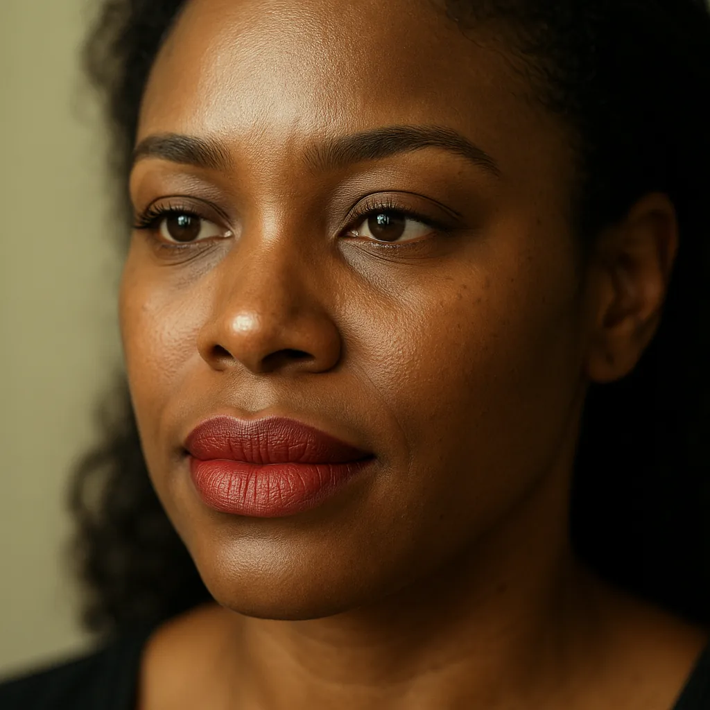

The Unfortunate Reality: When Permanent Makeup Goes Wrong
Permanent makeup promises convenience and enhanced natural beauty, but sometimes the outcome isn't what you envisioned. Unsatisfactory results can stem from various factors, including an inexperienced technician, improper technique, poor pigment quality, or inadequate aftercare communication. Common issues we see clients seeking help for in Austin include:
- Unnatural Color: Pigment healing too dark, too light, or shifting to undesirable shades like grey, blue, orange, or reddish tones.
- Asymmetrical Shapes: Eyebrows, eyeliner, or lip liner that are uneven or don't complement your facial features.
- Poor Shape Design: Brow arches that are too high or too low, eyeliner that's too thick or poorly placed, or lip shapes that look unnatural.
- Migration or Fuzziness: Pigment spreading beyond the intended lines, creating a blurred effect (especially common with eyeliner).
- Simply Not Liking the Style: Perhaps the trend (like very bold brows) doesn't suit you, or it wasn't what you discussed in your consultation.
Living with results you dislike can significantly impact your self-esteem. Thankfully, effective solutions are available from skilled professionals.
Finding Hope: Solutions for Unsatisfactory PMU in Austin
Depending on the nature and severity of the issue, there are two primary pathways to address bad permanent makeup: correction and removal. Explore these options on our PMU Correction & Removal service page.
Permanent Makeup Correction: Refining and Adjusting
For many clients dealing with issues like off-color brows or slightly uneven shapes, permanent makeup correction Austin style is an excellent option. This involves strategically applying new pigment over the existing work to:
- Neutralize Unwanted Colors: Using principles of color theory, a skilled technician can counteract unwanted hues (like grey or orange) by implanting corrective pigments, bringing the color back to a more natural brown, blonde, or desired shade (often called pmu color correction Austin).
- Adjust Shape and Symmetry: Minor asymmetries or undesirable shapes can often be subtly reshaped and balanced by adding new pigment in the correct areas, effectively camouflaging the old lines and creating a more flattering appearance.
- Soften Harsh Looks: Techniques can be used to soften overly bold or harsh lines, blending and refining the existing work for a more natural aesthetic. We focus on achieving natural-looking permanent makeup.
Correction requires a deep understanding of color theory, pigment behavior in the skin, and advanced application techniques. It's not simply covering up old work; it's a nuanced process demanding expertise.
Permanent Makeup Removal: Starting Fresh
In cases where the existing pigment is too dark, densely saturated, significantly misplaced, or the client desires a completely fresh start, permanent makeup removal Austin methods may be necessary. While laser removal is one option (typically performed by medical professionals), saline tattoo removal is a common and often preferred method within the PMU industry, particularly for cosmetic tattoos on the face.
- How Saline Removal Works: A specialized, safe saline solution is tattooed into the skin over the unwanted pigment using techniques similar to the original application. The solution works through osmosis, drawing the pigment particles up towards the surface of the skin where they become trapped in the scab that forms during healing. As the scab falls off naturally, the pigment comes away with it.
- Benefits: Saline removal can be effective on various pigment colors (including those difficult for laser) and is considered by many technicians to be a safer option for delicate facial areas compared to laser, potentially posing less risk to skin texture or natural hair growth. Multiple sessions are typically required for significant lightening or full removal.
Choosing between correction and removal depends heavily on the specific issue, the state of the existing pigment, and your desired outcome. This is thoroughly discussed in your free consultation.
Why Expertise Matters: Choosing the Right Artist for Correction in Austin
Fixing bad permanent makeup is often more complex and demanding than the initial application. The technician must not only understand standard PMU techniques but also possess advanced knowledge of:
- Advanced Color Theory: Understanding how existing pigments will interact with new corrective pigments is crucial to avoid making the color worse.
- Skin Physiology: Knowing how different skin types heal and hold pigment, especially skin that has already been tattooed.
- Removal Techniques & Limitations: Understanding the nuances of removal methods like saline and setting realistic expectations.
- Problem-Solving Skills: Each correction or removal case is unique and requires a tailored approach.

Choosing an inexperienced technician for correction or removal can unfortunately lead to further disappointment or even skin damage. It's vital to seek out a highly experienced, certified, and reputable Master Technician in Austin who specifically lists repairs or corrections among their services and can show proof of successful correction work. Always look for someone who offers a thorough consultation to assess your specific situation and discuss viable options. Read our guide on how to choose your Austin PMU artist.
The Studio Bella Approach: Your Partner in PMU Repair
At Studio Bella, we understand the emotional toll that unsatisfactory permanent makeup can take. Led by Cookie Bandel, a Master Permanent Makeup Technician practicing since 2008, our Austin studio is well-known not just for beautiful initial applications but also for expertise in permanent makeup repairs and corrections.
We frequently help clients who come to us seeking solutions for previous work done elsewhere, like Shari Arnold mentioned in her Google review:
"I have been going to Cookie for about 8 years now. She corrected a botched job by someone else and a fine job she did...."
Our approach focuses on:
- Thorough Consultation: We offer free consultations (in-person or via Zoom) to carefully examine your existing PMU, discuss your concerns and goals, and explain your options transparently.
- Safety First: We adhere to the highest safety and hygiene standards, using sterile, single-use equipment and high-quality pigments.
- Customized Solutions: Cookie leverages her extensive experience and artistic eye to develop a personalized plan, whether it involves intricate color correction, shape adjustment, or recommending a removal process like saline removal.
- Realistic Expectations: We provide honest assessments and ensure you understand the likely outcomes and the number of sessions potentially required. Our FAQ page addresses common questions.
- Paramedical Expertise: Cookie's skills extend to paramedical tattooing, giving her a deeper understanding of skin and pigment interactions, crucial for complex corrections.
Conclusion
Living with permanent makeup you regret doesn't have to be your reality. Whether you're dealing with faded color, an unnatural shape, or asymmetry from microblading, eyeliner, or lip blush, expert solutions for fixing bad permanent makeup are available right here in Austin. Both correction techniques and removal options like saline removal can offer a path forward. The most critical step is choosing a highly experienced and knowledgeable technician who specializes in these intricate procedures. With the right expertise, you can restore your confidence and achieve the beautiful, natural-looking results you initially desired.
Ready to explore your options for fixing permanent makeup in Austin? Don't wait any longer.
Schedule Your FREE Correction ConsultationLet Master Technician Cookie Bandel at Studio Bella assess your situation and discuss how we can help!